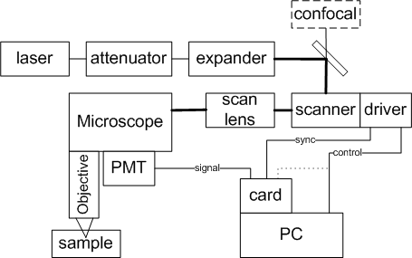
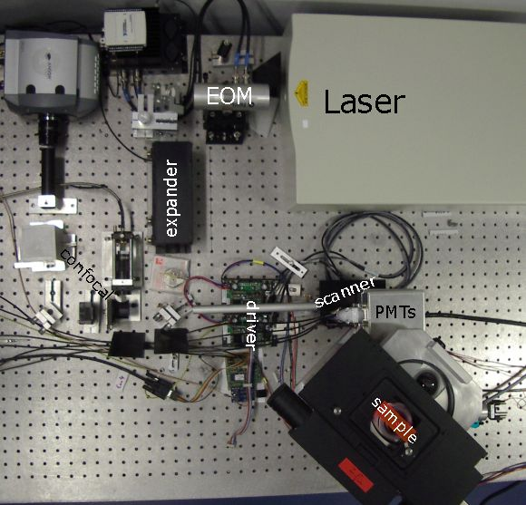

Documentation: Setup a 2 Photon Microscope
C.Seebacher
last change 16. Februar 2009
Seebacher@biz.uni-muenchen.de
www.lmu.de/~chr
What you need
Hardware

Microscope
Nikon, Leica, Olympus, Till-Photonics, Zeiss, and many more
(access to the intermediate image)
motorized z-control (you want to do 3D)
dichroic mirrors and filters
Laser
expensive femto second laser for 2 photon excitation: e.g. Spectra
Physics, Coherent, Menlo-Systems, Toptica, Amplitude and so on ....
any CW-laser for confocal microscopy (you need an extra pinhole between
dichroic and detector, or use a small detector, or use fiber coupling)
Laser attenuator
All lasers have too much power. You have to attenuate the laser. Reflecting ND filters can do if they
do not build up too strong kerr lenses. I tried a reflecting attenuation wheel at 1W power without succes.
An EOM is the recommendation. I have an ConOptics.
Laser beam expander
most lasers have a 1mm collimated beam but for the
scanner/scanlens/objective you need several mm. I use an approx. 4
times expander.
Laser puls compressor (prechirp)
You can get some improvement using prechired pulses to get as short as
possible pulses at the sample.
Scanner
Galvos: small and fast e.g. CTI6210,CTI6215, GT100 etc.
Galvo driver board:
- analog input driver: conventional PID (option 1) or SmartMove
(option
2); connect Analog-Out
on
the
National Instruments card with the analog inputs of the boards.
- or digital input driver: Galvo control SmartMove with extra
controller (option 3)
connected to a
serial RS232 port of the PC.
Scanlens, a f ~ 50nm achromat could do if you do not need a planar
field, a
large field and a confocal detection.
Or complete
digital
scanhead like the Yanus via Till-Photonics.
PMT-Detector
PMT: sensitive, large area, e.g. Hamamatsu R6357.
High Voltage supply, e.g Hamamatsu C4900
Amplifier with ~1MHz bandwidth, (e.g 1k Ohm in, low noise ~100x
Amplification, max. +-10V output for NI-card)
AD-Card: National Instruments PCI6111, PCI6110 or similar (should have
4 MHz
simultaneous sampling on each
channel). You need a speed approx. 4 times the analog bandwidth for
Nyquist sampling. You can work with slower cards but then you need an
integrating circuit witch needs much more effort.
Cables for synchronizing galvos and AD-sampling:
- conventional PID
(option1): connect PFI6 with PFI0/AI-Start
- SmartMove analog in(option2): connect PFI6 with PFI0/AI-Start
(delay is
done with the "adclock.startdelay" parameter)
- SmartMove with extra controller
(option3): connect the trigger out (Pin0 or 1) on the extra controller
with
PFI0/AI-Start, and feed the 8MHz clock to PFI1.
Bit/Pin0: high during frame (frame start).
Bit/Pin1: high during line (line start) can be used for blanking.
Bit/Pin2: high during sequence
CCD-Spectrograph-Detector
planned for near future, demo is working
APD-Photon counting-Detector
The counters on the NI PCI611x card are not really good but is somehow works. I recmmend to take a better counter card.
Computer
tested on a goof P4, 1.3GHz, 256BM RAM
I use a 2.8GHz, 1GB RAM
Here is a photograph of our first setup:

Software
Labview 8 with IMAQ/Vision 8 and NIDAQmx
A small dll BinningDLL\Release\Binningdll.dll is compiled for Windows.
Labview on Linux and Mac needs a
new compilation.
The colibri software
or: Florian Engert Software
or: Mathlab6.1 (ScanImage) -
(does not work with the digital galvo control).
Good to have: ImageJ, Irfanview, Autohotkey.
Installation of Labview
You have to install Labview first. At the moment I use version 8.0.1.
Higher versions should also work. You need:
- LabView
- NI-VISA for the the RS232 ports
- NI-DAQmx driver for the AD-card
- NI-IMAQ
- NI-Vision development module (e.g. the \vi.lib\Vision\Pixel
Manipulation.llb)
I needed 3 CDs: Labview, NI-Vision Development and DAQmx that comes
with the Card.
You can check the hardware and the installation with the program
"Measurement and Automatisation Explorer". There you should have the
following entries:
Geräte und Schnitstellen:
Ports
NI-DAQmx, here you can test the card
Software:
LabView8
NI-Vision_ImageProcessing and Machine Vision:8.0.0.7845:NIVision.dll
NI-Vision_Sevices:8.0.0.3393:NIVisSvc.dll
NI-VISA:3.4.0.49152: Windows\System32\visa32.dll
NI-DAQmx:8.0.0f0: NationalInstruments\NI-DAQ
NI-IMAQ:3.5.0: NationalInstruments\NI-IMAQ
Installation of Colibri
So far there is no installation file.
You need lots of vi-files in the \2Photon and in the \Bibliothek
folders; download them all.
Remove the -template from the \2Photon\ScanMicroscope.ini-template
and \2Photon\GUI.ini-template filenames (use copy if you are in
SVN).
Try to open some VIs in the 2Photon folder and look if it finds VIs
from the Bibliothek folder (e.g. try Variables\Variables.vi,
Treiber\TJob.vi, ImaqQueue\ImaqStorage.vi..)
Create a c:\Temp folder. You can change
the path in the SaveImaqFromQueue.vi and GetImage.vi. But it should be
placed
on a fast and large disk.
Copy /variables/Mic.ini to a new filename and change
\2Photon\ScanMicroscope.ini accordingly. Modify the new file for
different
hardware. Delete all driver.list entries you do not need.
Modify the bitsize="6.14E-7" in /variables/Mic.ini for different
hardware. We use 614 nanometer per bit in the intermediate image. With
a 12bit DA (6115-card!) multiply by 16.
Option analog galvo control (1)(2) edit: galvo.type="analog"
adclock.source="internal"
Option SmartMove with digital control(3) edit:
galvo.type="digital"
adclock.source="external"
Try to start ScanMicroscope.vi.
Features
Comes with complete source code.
Vector based scan description.
1 to 4 channels only limited by the AD-card.
support of the digital interface to the SmartMove boards (bidirectional
scanning with all speeds).
4 MHz sampling speed (AD-card and computer dependent) with
variable binning n=1...65635 (slower than 15ms/pixel)
flexible scan speeds from sub ms (40µs) to several s
(memory/binning-limit?) per line.
Tested: 10µ x10µ, 4x4 pixel with 12µs/pixel achieves
0.78ms per frame, but I lost data after 60 frames (buffer too small)
Tested: 100µ x100µ, 4000x1200 Pixel with 1µs/pixel.
4000x2000 does somehow not work (out of memory..)?!
Tested: 10µ x10µ, 100x100 Pixel with 1µs/pixel
achieves 46.5fps
Tested: 4µ x4µ, 80x80 pixel with 6µs/pixel,
40ms/frame
100 frames continuous
Tested: 4µx4µ, 80x80 pixel with 12µs/pixel,
78.7ms/frame 500 frames continous
Arbitrary scan tracks
Spot scan
Line scan (at the monent not tested)
Flexible Job control
Units are meter at the sample.
Some support of PCO CCD cameras.
Contionous running (almost no gap between scans)